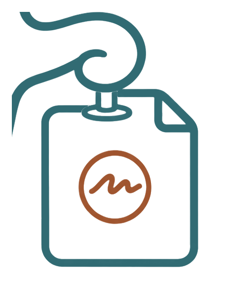
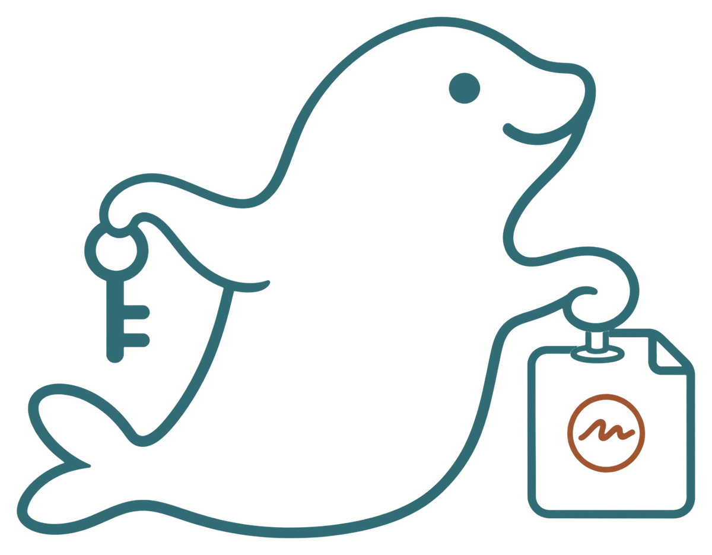
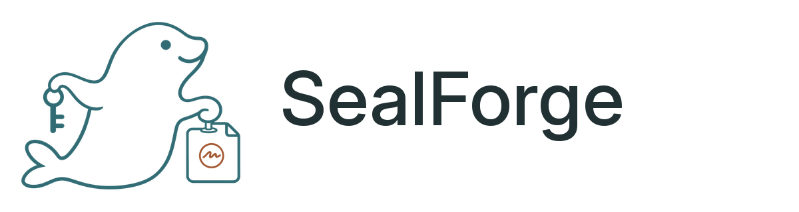
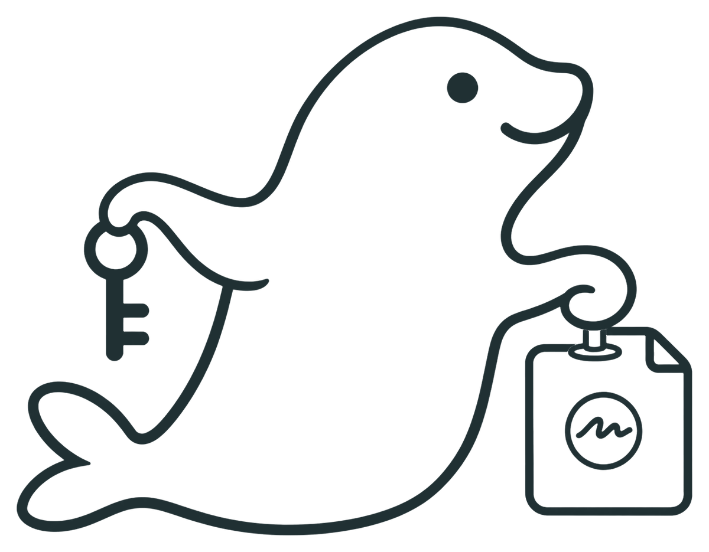
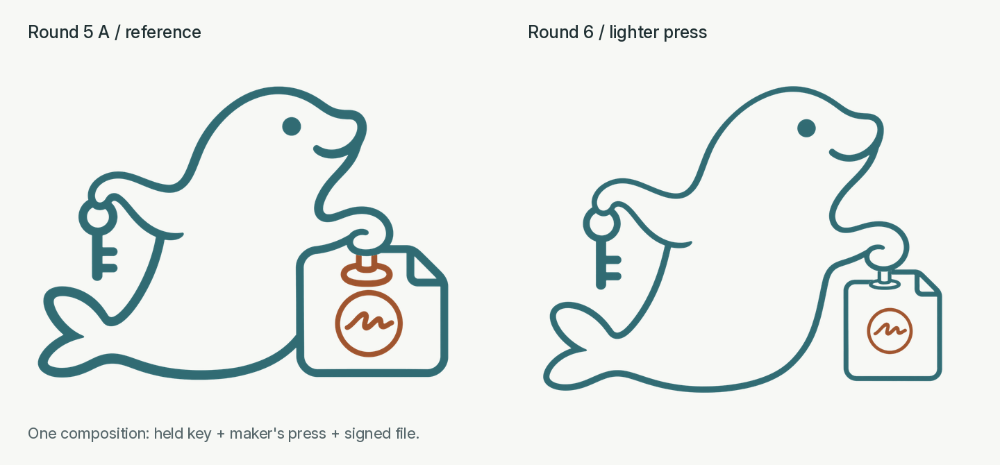
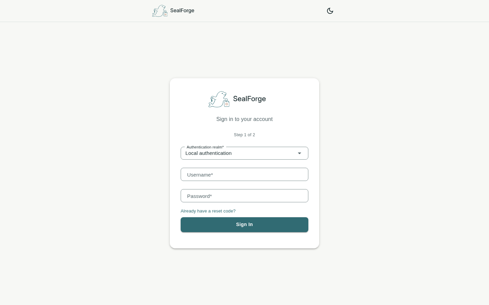
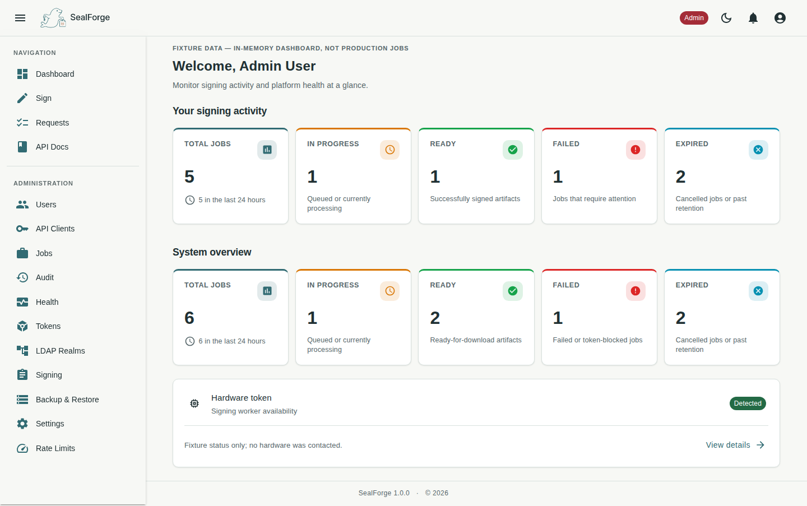
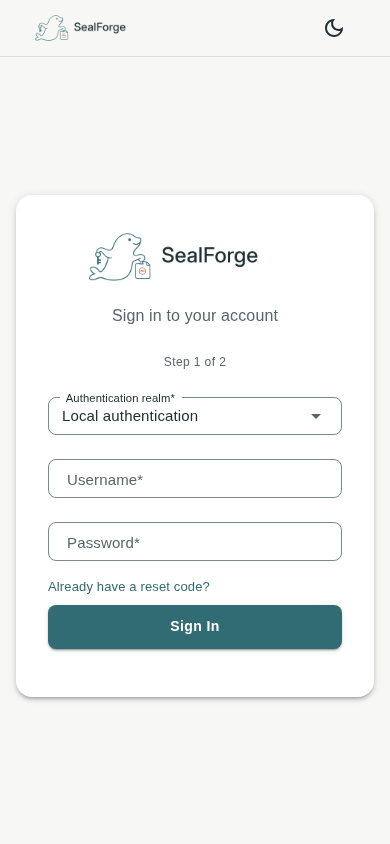
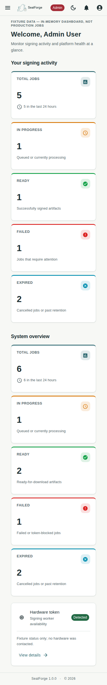

Smaller, not louder.

The press tucks under the working flipper. Petrol integrates the tool into the scene; copper highlights what it produces. Compare the copper-tool treatment above without changing the geometry.
ROUND 6 · PRE-FINAL STUDY
The chosen A composition, with a narrower signing area and a smaller, quieter press. The held key, natural seal and maker’s gesture stay together.


Your signing workshop.
The key stays with the seal.
Copper stays with the resulting mark.

The press tucks under the working flipper. Petrol integrates the tool into the scene; copper highlights what it produces. Compare the copper-tool treatment above without changing the geometry.


No separate favicon scene. The actual face is retained; only the neck is closed. Tiny-pixel optical work remains before a final kit.

Muted petrol for primary actions and the character. Copper for the imprint, not for warnings. Neutral paper and charcoal keep the interface calm instead of tinting the whole application green.
#316B73#9F542E#F7F8F5#FFFFFF#203033#56666A| Pair | Light | Dark |
|---|---|---|
| Body text / page | 12.86:1 | 15.74:1 |
| Secondary text / card | 5.99:1 | 7.94:1 |
| Link / page | 5.66:1 | 8.76:1 |
| Copper / page | 5.21:1 | 8.79:1 |
| Primary button label | 6.03:1 | 8.76:1 |
In dark mode, the mint primary button uses charcoal text, not white. Success, warning and error colors remain separate semantic states.
These are browser captures of compiled SealForge Razor components with an isolated palette overlay. Authentication and data services are fixtures: this is a visual palette study, not a deployed application or a signing test.




Application captures use the recommended quiet-tool artwork. Palette recommendation: the quiet-tool treatment above, petrol primary controls, copper reserved for the imprint, and neutral #151B1D for the dark page background.